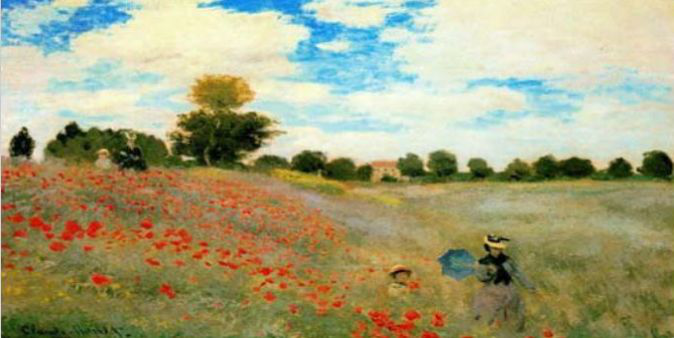
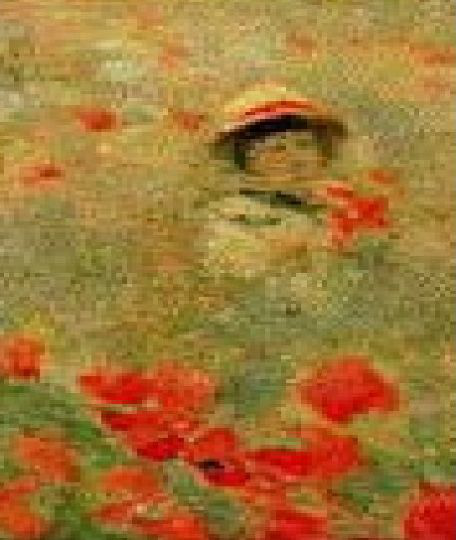
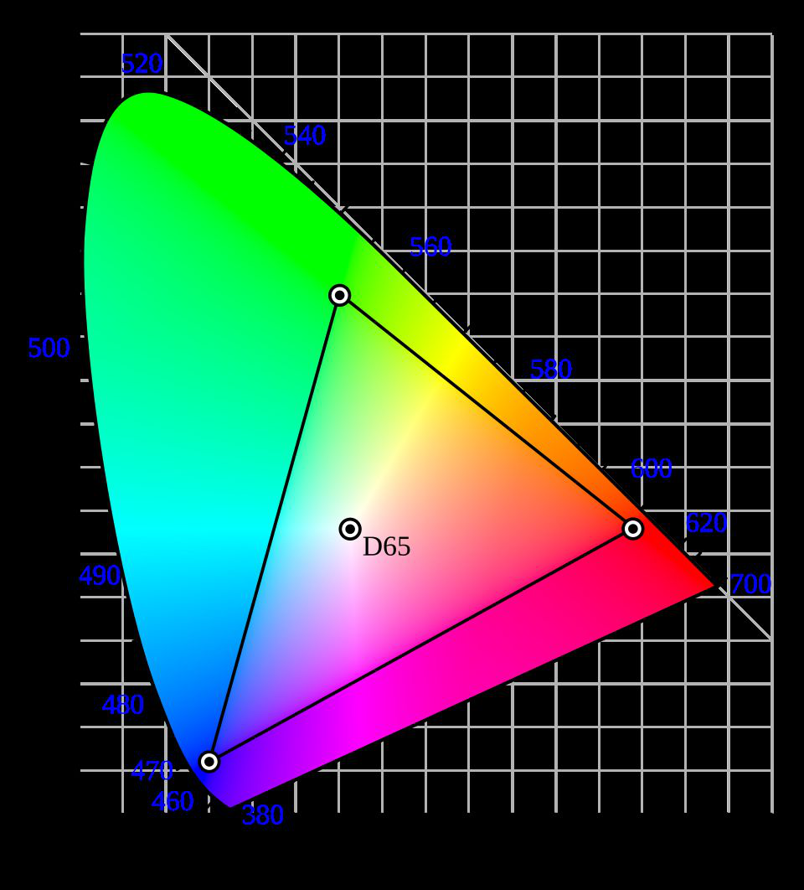
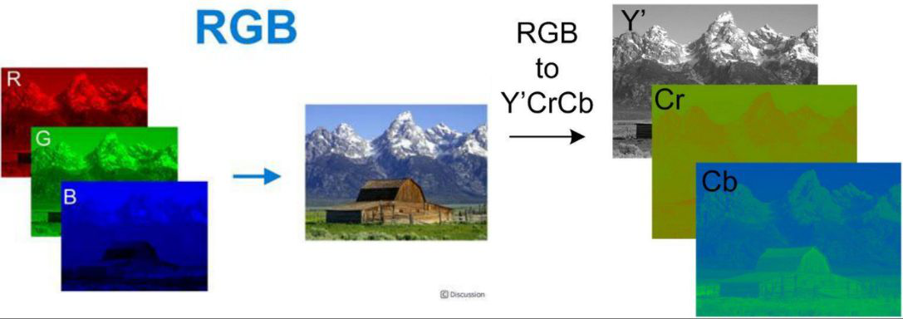
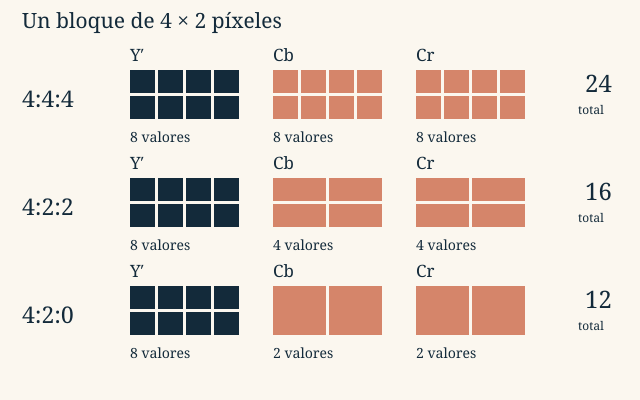

Tema 2 · Representación de la información
2.4
LECCIÓN 2.4
Una fotografía, un plano y un icono no necesitan la misma representación. La percepción visual ayuda a decidir qué guardar y qué podemos simplificar.
La visión tiene una resolución espacial limitada. Al acercarnos a un cuadro distinguimos pinceladas; desde lejos las integramos en una escena. Los detalles siguen ahí, pero no siempre los resolvemos por separado.


También integramos información en el tiempo: una sucesión de imágenes fijas puede producir movimiento aparente. Intervienen la respuesta visual y el procesamiento cerebral; no se explica todo por la persistencia retiniana. Esta idea conectará con el vídeo.
La luz visible abarca aproximadamente 380–780 nm. Tres tipos de conos responden a bandas solapadas de longitudes de onda. La percepción depende de la luz, los objetos, el observador y las condiciones; los conos no son tres detectores exclusivos de rojo, verde y azul.
La colorimetría describe los colores mediante valores triestímulo. CIE XYZ sirve como referencia independiente del dispositivo. El diagrama de cromaticidad CIE separa la información cromática de la luminancia. Los primarios de un dispositivo delimitan una gama: no cualquier combinación de sus tres luces reproduce todos los colores visibles.

| Modelo | Qué describe | Uso |
|---|---|---|
| RGB | Intensidades de luz roja, verde y azul; mezcla aditiva. | Pantallas y proyectores. |
| CMYK | Tintas cian, magenta, amarilla y negra; mezcla sustractiva. | Impresión. |
| Y′CbCr | Luma y dos componentes de diferencia de color. | JPEG y vídeo. |
| HSL | Matiz, saturación y claridad. | Selección y edición de colores. |
En RGB, las tres luces a intensidad máxima producen blanco; en impresión, las tintas absorben parte de la luz. La conversión entre modelos depende de los espacios de color y de los dispositivos. La claridad L de HSL no es luminancia física.
Un mapa de bits es una retícula. Cada píxel contiene un gris, un color o un índice de paleta. Una representación vectorial guarda objetos: líneas, curvas, polígonos y texto, con sus posiciones y atributos.
Al ampliar un mapa de bits no recuperamos detalles que no fueron capturados. Interpolar suaviza o estima valores intermedios. Un dibujo vectorial puede recalcular sus curvas a otra escala y conservar bordes nítidos.
Los mapas de bits son adecuados para fotografías y texturas; los vectores, para esquemas, logotipos y planos. SVG describe geometría; PDF puede mezclar vectores, texto e imágenes. Vectorial no significa siempre menor tamaño: depende de la complejidad.
La resolución espacial de una imagen se expresa aquí como anchura × altura en píxeles. La profundidad indica cuántos bits se dedican a cada píxel. Son parámetros distintos.
: anchura; : altura; : bits por píxel. Se excluyen cabeceras, paletas y relleno.
Con RGB de ocho bits por componente, cada píxel usa 24 bits = 3 bytes y admite combinaciones. El naranja del material es , escrito como FF 80 30 en orden R, G, B. El orden físico de canales de un archivo concreto puede ser distinto.
Una imagen de 10 × 15 píxeles ocupa B de datos RGB. Una imagen de 256 × 256 en grises de ocho bits ocupa 65.536 B = 64 KiB. El tamaño real del archivo depende también de su formato.
| Formato | Características del material |
|---|---|
| BMP | Representación matricial sencilla; el ejemplo es RGB sin comprimir. Existen variantes y puede haber relleno por filas. |
| TIFF | Flexible: distintas profundidades, RGB, CMYK o grises; puede usar compresión sin pérdidas o incorporar JPEG. |
| PNG | Compresión sin pérdidas; admite grises, RGB, paleta y transparencia. Útil para texto, capturas y bordes nítidos. |
| JPEG habitual | Compresión con pérdidas orientada a fotografías; calidad y tamaño dependen de los ajustes. |
| GIF | Colores indexados en paletas de hasta 256 entradas; compresión LZW, transparencia de índice y animación. |
La extensión no basta para determinar todas las propiedades. Un TIFF no garantiza ausencia de pérdidas; un PNG no restaura colores que se eliminaron antes de guardarlo.
En muchas imágenes distinguimos mejor los detalles finos de brillo que los de color. Y′CbCr separa luma Y′ —relacionada con el brillo— y diferencias cromáticas Cb y Cr. Y′ no es exactamente luminancia física.

Podemos reducir la resolución de Cb y Cr manteniendo la de Y′. Es submuestreo de crominancia y sí elimina información: en bordes coloreados finos la pérdida puede verse.

| Esquema | Y′ | Cb | Cr | Total de valores |
|---|---|---|---|---|
| 4:4:4 | 8 | 8 | 8 | 24 |
| 4:2:2 | 8 | 4 | 4 | 16 |
| 4:2:0 | 8 | 2 | 2 | 12 |
Son valores de componentes, no bytes automáticamente: para obtener bits hay que multiplicar por su profundidad. La denominación 4:2:0 no significa que una componente cromática desaparezca.
En el JPEG habitual, el recorrido continúa:
No hay que atribuir todas las pérdidas a la última etapa: el submuestreo y la cuantificación ya han descartado información. La DCT, por sí sola, cambia la representación; no es el paso que decide qué detalle eliminar.
Explora. Abre JPEG paso a paso. Compara la separación de componentes, el submuestreo y la cuantificación. Busca qué cambios afectan al color y cuáles introducen bloques o pérdida de detalle.
En una imagen indexada, cada píxel apunta a una entrada de una paleta RGB. Para 256 colores basta un índice de ocho bits. La paleta ocupa B y se guarda una vez, no por cada píxel.
Color directo: R, G, B por píxel.
Color indexado: un índice por píxel + una tabla compartida.
La compresión LZW de GIF conserva los índices, pero reducir previamente una fotografía a 256 colores puede perder fidelidad. El tramado (dithering) combina píxeles de colores disponibles para simular visualmente tonos que faltan. GIF también puede guardar imágenes sucesivas con tiempos de presentación y un índice transparente.
El cisne de 1024 × 768 píxeles necesita 2.359.296 B = 2,25 MiB de datos RGB de 24 bits. En el ejemplo histórico de las diapositivas, distintas opciones de JPEG producen archivos de aproximadamente 523, 81,33 y 43,16 KB; PNG RGB ronda 1,15 MB. Son mediciones con Photoshop 7 y sus ajustes, no proporciones universales ni tamaños deducibles solo de la extensión.
Para comparar, fija primero la resolución y el modelo de color; después distingue datos sin comprimir, paleta y cabeceras y compresión aplicada. Los ejercicios de imagen trabajan cada cantidad por separado.
Fundamentos de Informática
Tema 2 · 2.4